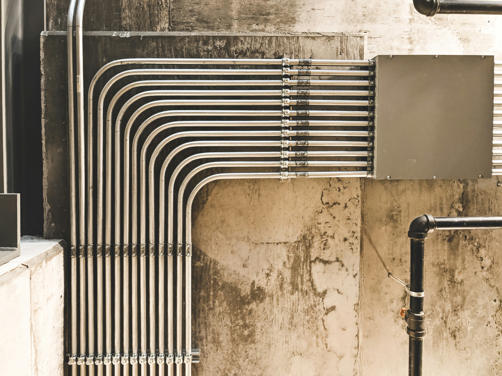

Commercial Plumbing
Professional plumbing services for offices, restaurants, retail stores, hotels, schools, hospitals and other commercial properties across Sarjapur, Bellandur, HSR Layout and Electronic City. We handle installations, repairs, maintenance and emergency plumbing with minimal disruption to business operations.
- Office & corporate building plumbing
- Restaurant & commercial kitchen plumbing
- Hotel & hospitality plumbing systems
- Commercial leak detection & repair
- High-capacity drainage maintenance
- Water supply line installation
- Annual maintenance contracts (AMC)

Contractor Plumbing
Trusted plumbing partner for builders, developers and contractors across Bangalore. We handle complete plumbing for new constructions, housing projects, apartment complexes and commercial builds — from foundation rough-in to final fit-out, delivered on schedule and to specification.
- New construction rough-in & fit-out
- Multi-floor residential & apartment plumbing
- Builder-grade supply & drainage systems
- Underground & slab plumbing
- Site coordination with civil contractors
- Pressure testing & sign-off inspections
- Project-based billing & scheduling

Drain Cleaning
Clogged drains are more than an inconvenience — they can lead to water damage and health hazards. Our professional drain cleaning services clear blockages fast and keep your system flowing freely across Sarjapur, Bellandur and HSR Layout.
- Hydro-jetting for deep clogs
- Sink & bathtub drain clearing
- Floor drain & floor trap maintenance
- Kitchen grease trap cleaning
- Camera inspection available
- Preventive maintenance plans

Leak Repair & Detection
Even a small leak can waste thousands of litres of water and cause significant structural damage. We use advanced leak detection technology to find and fix leaks quickly — including concealed pipe leaks and overhead tank leaks common in Bangalore apartments.
- Faucet & tap leak repair
- Concealed pipe leak detection
- Under-slab leak detection
- Toilet & cistern leak repair
- Overhead tank leak fixing
- Thermal imaging detection
Pipe Installation & Repiping
Whether you're building new or replacing old corroded pipes, our certified plumbers install durable piping systems that last. We work with CPVC, UPVC, PPR and copper to suit every home and commercial requirement in Bangalore.
- New construction plumbing rough-in
- Full home & apartment repiping
- CPVC, UPVC & PPR installation
- Gas line installation & testing
- Commercial pipe systems
- Pressure testing & inspection

Water Heater Services
No hot water? We service, repair and install all types of geysers and water heaters including instant geysers, storage geysers and solar heaters — covering all major brands used in Bangalore homes and apartments.
- Instant & storage geyser installation
- Geyser repair — all brands
- Solar water heater servicing
- Thermostat & element replacement
- Anode rod replacement
- Annual flushing & maintenance

Bathroom Plumbing
Complete bathroom plumbing for renovations, repairs and new installs. We handle everything from toilet replacements to full bathroom remodels — with precision and care — across apartments and villas in Sarjapur and Bangalore.
- Toilet installation & repair
- Shower & bathtub installation
- Vanity & wash basin plumbing
- Bathroom remodel rough-in
- Bidet & health faucet installation
- Shower pressure balancing

Kitchen Plumbing
Whether you're upgrading your kitchen or dealing with a blocked sink, our team handles all kitchen plumbing efficiently without disrupting your day — from modular kitchen fit-outs to quick tap replacements.
- Sink installation & repair
- Modular kitchen plumbing
- Garbage disposal service
- Dishwasher hook-up
- Refrigerator water line
- Tap & faucet replacement

24/7 Emergency Plumbing
Plumbing emergencies don't wait for business hours. Burst pipes, flooding, sewer backups, gas leaks — we dispatch immediately across Sarjapur, Bellandur, HSR Layout, Electronic City and Whitefield to minimise damage and restore safety fast.
- Burst pipe repair
- Flooding & water damage response
- Gas line emergencies
- Sewage backup & overflow
- No hot water — geyser emergency
- 60-minute response guarantee